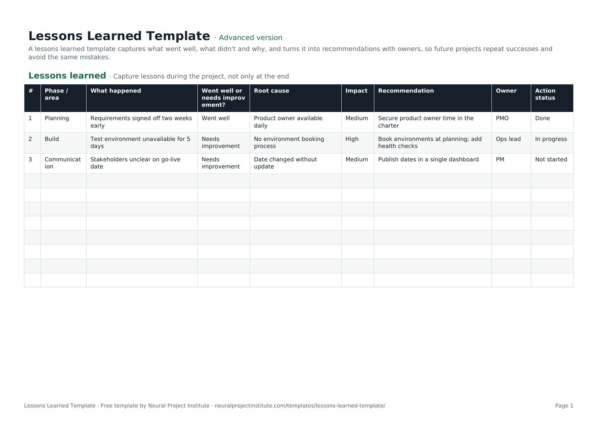

Free Lessons Learned Template (Google Sheets, Excel, PDF)
This free lessons learned template gives you one structured log for what went well, what needs improvement, why it happened and what you will do differently, with an owner and a status for every recommendation. Download it for Google Sheets, Excel or as a printable PDF, in a beginner, advanced or expert version.

Key takeaways
- Each row records one lesson: the phase, what happened, whether it went well, the root cause, the impact, a recommendation, an owner and an action status.
- Dropdowns keep entries consistent, so you can filter the log by phase, impact or open actions.
- Capture lessons throughout the project, not only at closure, while the details are fresh.
- A lesson is only learned when its recommendation is owned and acted on; the Action status column tracks that.
- Choose beginner for a quick five-column log, advanced for the full log with dropdowns, or expert for a dashboard and revision history.
Free download · no sign-up
Get the lessons learned template
Pick your level and format: Google Sheets, Excel or a print-ready PDF. Spreadsheets include dropdowns, formulas and sample rows you can overwrite.
What is a lessons learned template?
A lessons learned template is a structured log for recording what a project team learned: what happened, whether it went well or needs improvement, why it happened, how much it mattered and what should be done differently next time. Each entry ends with a recommendation and an owner, so the knowledge can be reused on the same project and on future ones.
It helps to separate a lesson identified from a lesson learned. Writing 'testing started late' identifies a lesson. It is only learned when a later phase or project plans testing differently because of it. That is why this template goes beyond a list of observations and includes a recommendation, an owner and an action status for every row.
The idea is common to the main project management frameworks. PMI's *PMBOK Guide* describes a lessons learned register that is kept up to date during the project and moved into an organisational repository at the end, and PRINCE2 uses a lessons log during the project and a lessons report to pass lessons on. Agile teams capture similar learning in each sprint retrospective. This template works as a register for any of these approaches.
For the wider process, including how to make lessons change practice across an organisation, see our guide to lessons learned in project management.
Preview the lessons learned template
Here is the first tab with the three sample rows included in the download. Overwrite them with your own lessons.
| # | Phase / area | What happened | Went well or needs improvement? | Root cause | Impact | Recommendation | Owner | Action status |
|---|---|---|---|---|---|---|---|---|
| 1 | Planning | Requirements signed off two weeks early | Went well | Product owner available daily | Medium | Secure product owner time in the charter | PMO | Done |
| 2 | Build | Test environment unavailable for 5 days | Needs improvement | No environment booking process | High | Book environments at planning; add health checks | Ops lead | In progress |
| 3 | Communication | Stakeholders unclear on go-live date | Needs improvement | Date changed without update | Medium | Publish dates in a single dashboard | PM | Not started |
Sample rows are examples: replace them with your own.
What's in the template
- Lessons learned: #, Phase / area, What happened, Went well or needs improvement?, Root cause, Impact, Recommendation, Owner, Action status
Every column has a job. The table below explains what to write in each one and what a useful entry looks like.
| Column | What to record | Good entry looks like |
|---|---|---|
| Phase / area | Where in the project the lesson belongs: a phase (planning, build, testing) or an area (communication, suppliers) | Build |
| What happened | A short, factual description of the event or practice | Test environment unavailable for 5 days |
| Went well or needs improvement? | Dropdown: Went well or Needs improvement | Needs improvement |
| Root cause | The underlying reason, not the symptom | No environment booking process |
| Impact | Dropdown: Low, Medium or High effect on time, cost, quality or people | High |
| Recommendation | A specific action someone could take next time | Book environments at planning; add health checks |
| Owner | One named person or role responsible for acting on the recommendation | Ops lead |
| Action status | Dropdown: Not started, In progress or Done | In progress |
Beginner, advanced and expert versions
- Beginner: one tab with the five essential columns: Phase / area, What happened, Went well or needs improvement?, Recommendation and Owner. Good for a first session or a small project.
- Advanced: the full log with all nine columns, including Root cause, Impact and Action status, and the dropdowns described above. This is the version most teams use as their running register.
- Expert: the advanced log plus an Instructions tab, a Dashboard that counts lessons by owner and by action status automatically, status colours on the Action status column and a Revision history tab.
How to fill in the lessons learned template
- Set up the log at kick-off. Save a copy in a shared drive, add the project name to the file name and tell the team where it lives. Capturing lessons starts on day one, not at closure.
- Collect lessons as they happen. Add entries after each phase, milestone, sprint or major incident. Lessons written within a few days are far more accurate than ones recalled months later.
- Describe what happened in one factual sentence. State the event, not an opinion about a person: 'Supplier delivered hardware three weeks late', not 'Supplier was useless'.
- Classify it. Choose Went well or Needs improvement. Record successes as carefully as problems, because they are the practices you want to repeat.
- Find the root cause. Ask 'why?' until you reach something the team or organisation could change. A root cause analysis (5 whys) template or a fishbone diagram helps for complex problems.
- Rate the impact. Use Low, Medium or High based on the effect on schedule, budget, quality or the team. Impact helps you decide which lessons to discuss first.
- Write a recommendation and give it an owner. Make it specific enough that someone outside the team could act on it. Assign one owner per recommendation, even if several people help.
- Track the action status. Review open recommendations at regular project meetings and move them from Not started to In progress to Done.
- Share and store the log. At closure, review the full log with the team and sponsor, then hand it to your PMO or knowledge base so future projects can search it.
Lessons learned questions to ask
Good questions produce specific, useful lessons. Use these prompts in a session or send them out in advance. You will not need all of them; pick the areas that matter for your project.
Overall
- What went well that we should repeat?
- What did not go as planned, and why?
- What surprised us?
- If we started this project again tomorrow, what would we do differently?
Planning, scope and schedule
- Were the objectives and scope clear from the start?
- How accurate were our estimates, and where were they furthest out?
- How were changes to scope requested and approved?
- Which risks happened that were not on the risk register?
Communication and stakeholders
- Did stakeholders get the information they needed, when they needed it?
- Were decisions made quickly enough, and by the right people?
- Which meetings or status reports were useful, and which could we drop?
Team, resources and suppliers
- Did we have the right people and skills at the right time?
- Were roles and responsibilities clear?
- How well did suppliers and other teams deliver against what was agreed?
Quality and handover
- Did the deliverables meet the acceptance criteria first time?
- How smooth was the handover to operations or the customer?
- What would have helped the people who now support the result?
Lessons learned example
The table below shows a completed log for a website relaunch project. Notice how each entry has a root cause and a recommendation that someone could act on.
| Phase / area | What happened | Went well? | Root cause | Impact | Recommendation | Owner | Status |
|---|---|---|---|---|---|---|---|
| Planning | Content inventory finished a week early | Went well | Content lead joined from kick-off | Medium | Include the content lead in the project charter for all web projects | PMO | Done |
| Build | Two templates rebuilt after design sign-off | Needs improvement | Designs approved without developer review | High | Add a developer review step before design approval | Design lead | In progress |
| Suppliers | Hosting contract signed two weeks late | Needs improvement | Procurement lead time not in the schedule | Medium | Add procurement lead times as tasks in the schedule | PM | Not started |
| Communication | Weekly 10-minute status call kept stakeholders aligned | Went well | Fixed slot and one-page update | Medium | Reuse the one-page status format on the next project | PM | Done |
Weak and strong entries
The difference between a lesson nobody uses and one that changes practice is usually the level of detail.
| Weak entry | Strong entry |
|---|---|
| Communication was poor. | Stakeholders were not told the go-live date had moved, because the date lived in three documents. Publish key dates in one shared dashboard. |
| Testing went badly. | Testing lost five days because the test environment was unavailable and there was no booking process. Book environments during planning and add daily health checks. |
| Good teamwork. | Daily 15-minute stand-ups between design and development cut rework. Schedule joint stand-ups from the start of build on similar projects. |
If several entries need the same follow-up, you can track the actions in an action plan template and link it from the log.
How to run a lessons learned session
Before the session
- Share the template a few days in advance and ask everyone to add two or three lessons.
- Invite the core team, key stakeholders and, where relevant, suppliers. Keep the group small enough for everyone to speak.
- Ask someone other than the project manager to facilitate if possible, so the PM can contribute openly.
- Prepare an agenda; our meeting agenda template works well.
During the session
- Open by stating the ground rule: the focus is on processes and decisions, not on blaming individuals.
- Walk through the project phase by phase, using the Phase / area column to group entries.
- Spend most of the time on high-impact lessons and their root causes.
- Agree a recommendation and one owner for each lesson before moving on.
- Capture new lessons directly in the template on screen so nobody has to write them up later.
After the session
- Tidy the log, check every recommendation has an owner and share it with attendees within a few days.
- Add open recommendations to the agenda of regular project meetings until they are Done.
- Turn lessons that affect future projects into changes to templates, checklists or the project methodology; recurring risks belong in the next project's risk register template.
- Move any problem that still needs fixing on this project into your issue log rather than leaving it in the lessons log.
- Store the final log in the organisation's lessons repository as part of project closure.
Tips and common mistakes
- Waiting until the end. Lessons captured only at closure are vague and incomplete. Add entries at each phase end or sprint.
- Blaming people. If the session turns into finding fault, people stop sharing. Describe events and processes, not individuals.
- Recording only problems. Successes are just as valuable. They are the practices you want to spread.
- Stopping at symptoms. 'The deadline slipped' is a symptom. Keep asking why until you reach something you can change.
- Vague recommendations. 'Communicate better' is not actionable. 'Send a weekly one-page status update to sponsors' is.
- No owner, no follow-up. A recommendation without an owner rarely happens. Use the Owner and Action status columns and review them regularly.
- Never reading past lessons. Make reviewing the lessons repository a step in starting every new project, for example when you draft the project charter.
Lessons learned vs retrospective vs post-mortem
These terms overlap. The main differences are timing and scope.
| Lessons learned | Sprint retrospective | Post-mortem | |
|---|---|---|---|
| When | Throughout the project and at closure | At the end of every sprint | After a project, release or incident |
| Scope | A phase or whole project | One sprint and how the team works | One event or the whole project |
| Main output | A register of lessons with recommendations and owners | A few improvements for the next sprint | A review report with causes and actions |
| Audience | Team, sponsor, PMO and future projects | The Scrum Team | Team and stakeholders |
If you work in sprints, use our sprint retrospective template each sprint and copy the lessons that matter beyond the team into this log. To keep track of open risks and issues alongside your lessons, use a RAID log template.
Related templates and guides
 RAID Log TemplateFree RAID log template to track project Risks, Assumptions, Issues and Dependencies with…Beginner · Advanced · Expert
RAID Log TemplateFree RAID log template to track project Risks, Assumptions, Issues and Dependencies with…Beginner · Advanced · Expert Sprint Retrospective TemplateFree sprint retrospective template: what went well, what to improve, ideas and action…Beginner · Advanced · Expert
Sprint Retrospective TemplateFree sprint retrospective template: what went well, what to improve, ideas and action…Beginner · Advanced · Expert Meeting Notes TemplateFree meeting notes template with attendees, discussion, decisions and action items with…Beginner · Advanced · Expert
Meeting Notes TemplateFree meeting notes template with attendees, discussion, decisions and action items with…Beginner · Advanced · Expert Root Cause Analysis (5 Whys) TemplateFree root cause analysis template using the 5 whys: problem statement, why chain, root…Beginner · Advanced · Expert
Root Cause Analysis (5 Whys) TemplateFree root cause analysis template using the 5 whys: problem statement, why chain, root…Beginner · Advanced · Expert Project Plan TemplateFree project plan template with goals, scope, deliverables, tasks, owners, dates and…Beginner · Advanced · Expert
Project Plan TemplateFree project plan template with goals, scope, deliverables, tasks, owners, dates and…Beginner · Advanced · Expert Project Charter TemplateFree project charter template covering purpose, objectives, scope, milestones, budget,…Beginner · Advanced · Expert
Project Charter TemplateFree project charter template covering purpose, objectives, scope, milestones, budget,…Beginner · Advanced · Expert- Lessons Learned in Project Management: Guide and Examples
- Project Closure: Steps, Checklist and Closure Report Template
- Sprint Retrospective: Goal, Format and Facilitation Tips
To see how lessons fit into the end of a project, read our project closure guide.
Frequently asked questions
What is a lessons learned template?
A lessons learned template is a structured log for recording what went well and what needs improvement on a project, the root cause of each lesson, its impact, and a recommendation with an owner, so future work can benefit.
What should a lessons learned template include?
At minimum: the phase or area, what happened, whether it went well or needs improvement, the root cause, the impact, a recommendation, an owner and the status of the follow-up action. This template includes all of these.
What are the key lessons learned questions?
The core questions are: what went well, what did not go as planned, why did it happen, and what will we do differently next time? Add specific questions about planning, communication, resources and quality depending on the project.
How do you write a good lesson learned?
Describe a specific event factually, explain its root cause, state its impact and finish with a practical recommendation that has one owner. Avoid vague statements such as 'communication was poor'.
When should you capture lessons learned?
Throughout the project: at the end of each phase or sprint, after major events and at closure. Waiting until the end means details are forgotten and lessons cannot help the current project.
Who should facilitate a lessons learned session?
Ideally a neutral facilitator, such as a PMO member or a project manager from another team, so the project manager and team can contribute freely. On small projects the project manager often facilitates.
What is a lessons learned register?
A lessons learned register is the running log of lessons kept during a project. PMI's PMBOK Guide uses this term; PRINCE2 calls it a lessons log. This template can be used as either.
What is the difference between lessons learned and a retrospective?
A sprint retrospective looks at one sprint and how the team works. Lessons learned usually cover a phase or whole project and are shared beyond the team so other projects can use them.
Is this lessons learned template free, and does it work in Google Sheets?
Yes. All three versions are free to download with no sign-up, in Google Sheets, Excel and PDF formats. The dropdowns work in both Google Sheets and Excel.
Can I use the template for positive lessons?
Yes. Choose 'Went well' in the dropdown. Recording successes matters as much as recording problems, because they are the practices you want other projects to repeat.
Where should completed lessons be stored?
In a shared, searchable location owned by the PMO or a knowledge base, so future project teams can review relevant lessons when they start planning.
What is the difference between the beginner, advanced and expert versions?
The beginner version has five essential columns on one tab. The advanced version adds root cause, impact, action status and dropdowns. The expert version adds instructions, a dashboard that summarises lessons by owner and status, status colours and a revision history.